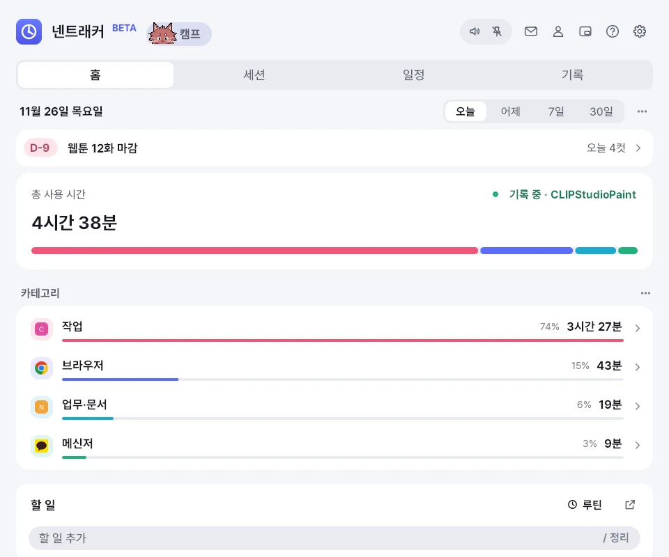
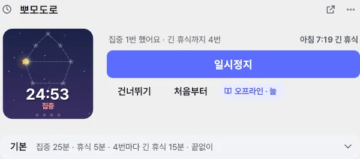
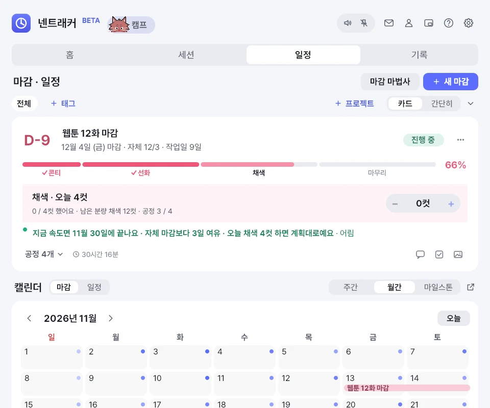
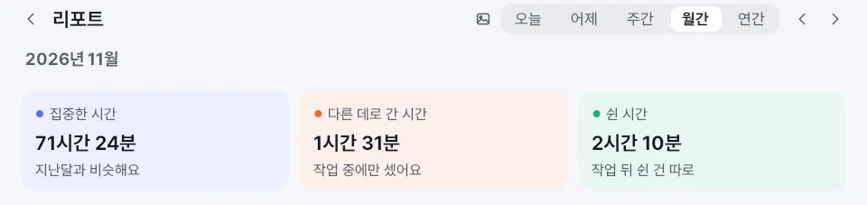
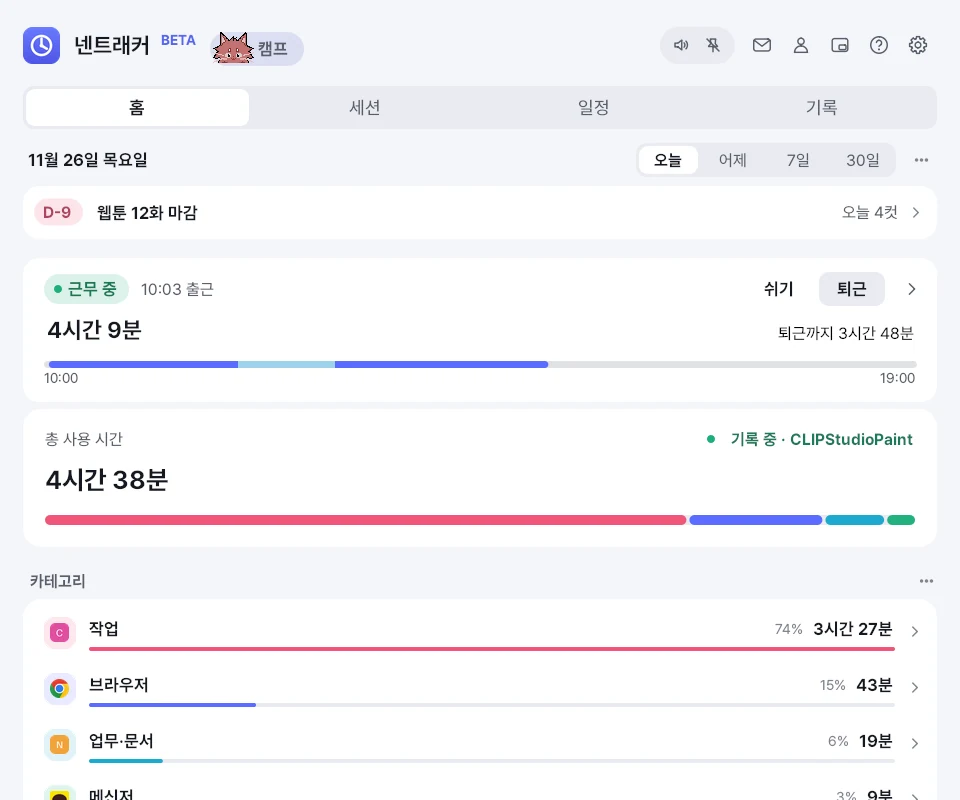
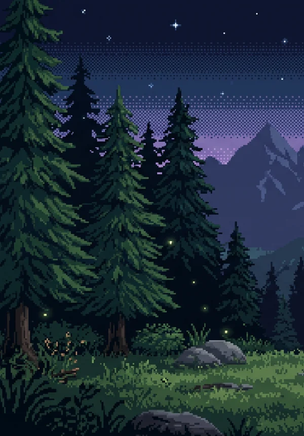
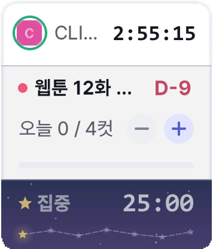
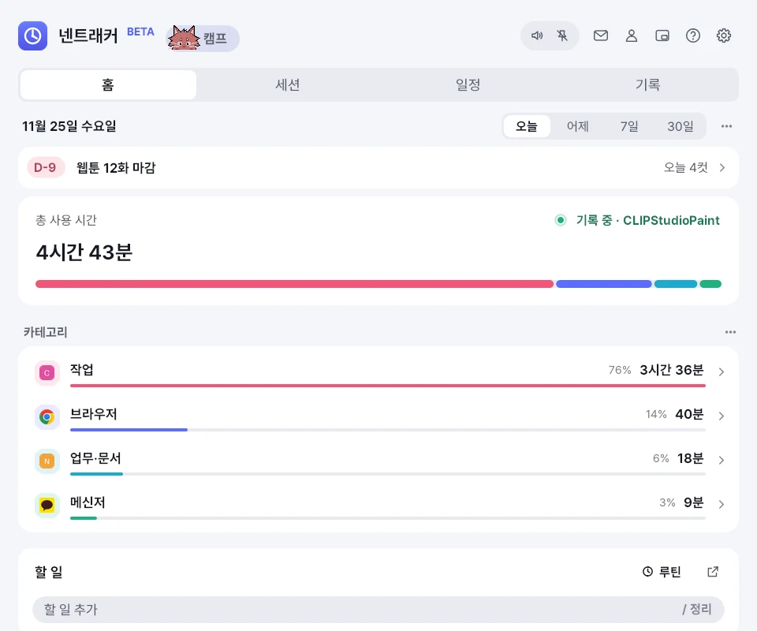

작업한 만큼 모닥불이 자라요
넨트래커는 켜 두기만 하면 작업 시간을 저절로 기록하는 윈도우용 무료 앱이에요. 기록이 쌓일수록 캠핑장 모닥불이 커지고, 다마고치 친구가 곁에서 응원해요.
무료로 받기켜 두기만 하면 쌓여요
어떤 프로그램과 사이트에서 얼마나 작업했는지 카테고리별로 저절로 모여요. 창 제목은 저장하지 않고, 로그인하지 않으면 기록은 내 컴퓨터에만 있어요.

작업할수록 친구가 자라요
작업한 시간만큼 모닥불이 커지고, 다마고치 친구의 레벨이 오르고, 캠핑장을 꾸밀 별조각이 모여요. 오른쪽 모닥불도 여기까지 읽어 내려온 만큼 자랐어요.
나도 불 피우기 · 무료넨트래커로 할 수 있는 것
칸마다 단추를 누르면 실제 앱 화면이 바뀌어요.
집중한 시간이 별자리가 돼요
뽀모도로를 켜면 시간이 흐르는 만큼 별을 이어요. 다 이으면 별자리 하나가 완성돼요. 집중 시간에 맞춰 48개 중 하나가 나와요.
- 쉬는 시간엔 방금 완성한 별자리 위로 초승달이 건너가요.
- 따로 띄우면 별자리 판만 작게 남겨 둘 수 있어요.

마감까지 하루 몫을 나눠요
마감일과 남은 분량을 넣으면 쉬는 날을 빼고 하루 몫을 나눠요. 하루 밀려도 남은 날에 조용히 다시 나눠요.
- 홈 맨 위 띠에 오늘 할 몫이 늘 떠 있어요.
- 셀프 출퇴근의 휴가 날은 마감 계산에서 빠져요.

리포트가 먼저 알아채요
한 달 기록을 관찰 일지처럼 다섯 장으로 보여 줘요. 잘했다 못했다 판정하지 않고, 다음에 해 볼 한 걸음만 권해요.

혼자 일해도 출근 · 퇴근
프리랜서와 1인 작업자를 위한 셀프 출퇴근이에요. 정한 시각에 출근을 묻고, 쉬는 시간 · 야근 · 휴가까지 근태 기록부에 도장으로 남겨요.
- 출근 의식오늘 할 일 셋 · 어제 적은 첫 할 일 · 가까운 마감을 보여 주고 시작해요.
- 쉬자 제안휴일 근무가 쌓이면 쉬는 날을 골라 보자고 먼저 말해요.
- 근무 광고판캐릭터 머리 위 작은 판과 이웃 목록에 ‘근무 중’이 떠요.

참고 그림을 띄워 두고 그려요
레퍼런스 보드에 그림을 끌어 놓고 자유롭게 배치하거나, 웹툰처럼 세로로 이어 보고, 한 쪽씩 넘겨 봐요.

그림을 끌어 보세요 · 두 번 누르면 크게 · 화살표 키로도 옮겨요
- 돌리고 뒤집기띄운 그림을 자유롭게 돌리고, 크기를 바꾸고, 위아래로 뒤집어요.
- 웹툰 · 페이지 보기왼쪽 쪽 줄로 원하는 쪽에 바로 가고, Z나 Ctrl+휠로 확대해요.
- 원고 보드클립 스튜디오 원고를 열어 두면 저장할 때마다 보드에 바로 반영돼요.
- 투명하게 겹치기배경을 투명하게 하면 핀 꽂은 그림만 작업 창 위에 떠요.
작게 접어 두고 작업해요
미니 화면은 지금 기록 · 뽀모도로 · 마감 진행을 손바닥만 한 창에 모아요. 할 일 · 메모 · 타이머 창을 그 아래에 착 붙여 둘 수 있어요.
- ‘항상 위에’를 켜면 그림 프로그램 위에서도 보여요.
- 붙여 둔 창은 미니 화면을 따라 함께 움직여요.

늘 곁에 있는 친구
기본 친구 아홉이 바탕화면과 캠핑장에서 함께해요. 성격도 말투도 저마다 달라요. 눌러서 말을 걸어 보세요.
작업하는 동안 바탕화면 창 위에 매달려 말을 걸고, 집중할 땐 조용히 응원해요. 작업하고 할 일을 끝낼수록 친밀도가 오르고 레벨이 올라요.
내 친구를 도트로 그려요
그림 한 장을 넣으면 도트로 바꿔 주고, 빈 판에 직접 그릴 수도 있어요. 이름과 말투를 정하면 바탕화면과 캠핑장에서 내 친구가 돼요.

기분 따라 옷을 바꿔요
밝음 · 어두움에 여러 색 테마를 입혀요. 테마마다 알림 소리와 축하 효과도 같이 바뀌고, 친구와 레벨을 올리면 그 친구의 전용 테마가 열려요.

이웃 캠핑장에 놀러 가요
구글로 로그인하면 이웃을 만들 수 있어요. 각자 작업하다가 같은 모닥불 곁에 모여요.
- 놀러 가기이웃 캠핑장에 내 친구를 데리고 가서 손을 흔들고 장작을 보태요.
- 말풍선 채팅친구 머리 위로 짧게 말을 주고받아요.
- 같이 듣기DJ를 맡은 이웃의 음악 앱 소리를 같이 들어요.
- 음성 대화필요할 때만 마이크를 켜서 이야기해요.
- 단체 뽀모도로같은 타이머로 함께 집중하고 함께 쉬어요.
순위도 비교도 없어요. 곁에 누가 있다는 것만으로 충분하게요.
제 작업에 필요해서 만들었어요
작업 시간을 재고, 마감까지 하루 몫을 나누고, 집중과 휴식의 리듬을 잡는 데 쓰려고 만든 앱이에요. 지금도 매일 작업하면서 쓰고 있어요.
지금 보이는 그림은 임시 그림이에요. 1.0에서 직접 그린 도트로 바뀌고, 그때까지는 BETA예요.
버그나 바라는 점은 앱 안 리포트로 알려 주세요.
헤넨
자주 묻는 것
정말 무료인가요? 네, 무료예요. 앱 안 상점은 작업해서 모은 별조각으로만 써요.
어떤 컴퓨터에서 쓰나요? 윈도우 10 · 11 (64비트) PC에서 써요. 맥과 휴대폰 판은 아직 없어요.
기록은 어디에 저장되나요? 로그인하지 않으면 모든 기록이 내 컴퓨터에만 있어요. 창 제목은 저장하지 않고, 사이트는 ‘유튜브’ · ‘기타 사이트’처럼 나눈 이름만 남아요.
로그인은 꼭 해야 하나요? 아니요. 이웃 · 놀러 가기 · 기기 연동을 쓸 때만 구글로 로그인해요. 설정 → 계정에서 계정과 서버 데이터를 언제든 지울 수 있어요.
집중할 때 알림이 방해되지 않나요? 뽀모도로 집중 중에는 알림 창을 띄우지 않아요. 친구도 조용히 응원만 해요.
어떤 작업에 맞나요? 그림 · 웹툰 · 글 · 공부 · 개발처럼 컴퓨터로 하는 일이면 다 돼요. 클립 스튜디오 원고를 띄워 두는 레퍼런스 보드처럼 그리는 사람을 위한 기능도 있어요.
설치할 때 경고가 떠요. 개인이 만든 앱이라 Windows가 ‘알 수 없는 게시자’라고 알릴 수 있어요. [추가 정보] → [실행]을 누르면 설치돼요.
업데이트는 어떻게 받나요? 켤 때와 몇 시간마다 새 버전을 확인해요. 알림의 ‘업데이트’를 누르면 받아서 설치해요.
BETA는 무슨 뜻인가요? 아직 만들어 가는 중이라는 뜻이에요. 그림은 1.0에서 새로 그린 도트로 바뀌어요.
버그는 어디에 알리나요? 앱 안 ‘버그 리포트 · 문의’로 보내 주세요. 로그인하면 보낼 수 있어요.